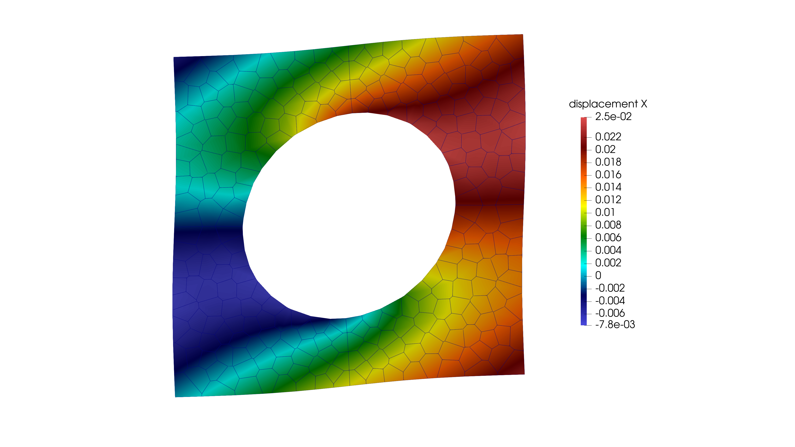
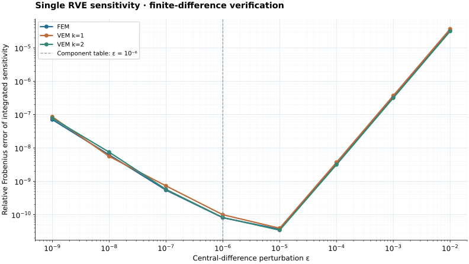

Prescribed deformation gradient
\[\mathbf{F}_M = \begin{bmatrix} F_{11} & F_{12} \ F_{21} & F_{22} \end{bmatrix}\]
The standalone RVE run is driven by command-line or input-file values for the macro deformation gradient.
Multiscale / Single RVE problem
A standalone RVE page for prescribed macro deformation gradient, periodic constraints, augmented KKT solve, homogenized Piola stress, and finite-difference verification of the tangent sensitivity.

Horizontal displacement on a deformed polygonal RVE with periodic boundary conditions.
Choose a discretization
Standard finite-element micro equilibrium with periodic constraints.
Open example →First-order polygonal projection and stabilization.
Open example →Second-order polygonal projection and DOFI stabilization.
Open example →Finite-difference verification
All three elastic examples use the same prescribed deformation and perturbation sweep. Every perturbed RVE is re-equilibrated before taking a central difference of its integrated Piola stress.

| RVE | Relative Frobenius error | Maximum absolute component error | Details |
|---|---|---|---|
| FEM | 8.077e-11 | 1.579e-08 | Graph and component table → |
| VEM k=1 | 9.966e-11 | 1.477e-08 | Graph and component table → |
| VEM k=2 | 8.211e-11 | 1.258e-08 | Graph and component table → |
\(\bar{\mathbf F}=\begin{bmatrix}1.015&0.02\\0.005&1.01\end{bmatrix}\), RVE tolerance \(10^{-12}\), 65 equilibrium solves per example. Small nonzero errors reflect finite-difference truncation, solver convergence, and floating-point precision.
Theory
The RVE receives a macro deformation gradient and solves for a periodic fluctuation field. The averaged Piola stress is then used as the macro constitutive response.
The standalone RVE run is driven by command-line or input-file values for the macro deformation gradient.
Periodic boundary constraints enforce matching fluctuation values on paired RVE boundaries, while one anchor removes rigid-body motion.
The code stores both the integrated stress and the volume-normalized average, which is useful for ACEFEM-style comparisons.
When enabled, the sensitivity convention is integrated-Piola first; volume normalization can be applied later when needed by the macro formulation.
Simulation
The simulation side shows how the micro problem is assembled and solved. The strongest implementation point is that the augmented PBC matrix is built directly in sparse form.
Micro mesh, DOFs, material parameters, and solver settings are read into a normal
Problem
.
Left/right and bottom/top boundary nodes are paired with a coordinate tolerance.
Anchor constraints remove rigid-body modes from the periodic fluctuation field.
The generic assembly path builds the micro equilibrium residual and tangent.
Displacement corrections and Lagrange multiplier corrections are solved together.
Integrated Piola stress, averaged stress, and optional sensitivity data are written to CSV.
Instead of allocating a dense augmented matrix, the implementation preserves the CSR graph of
Kuu
and appends only the sparse constraint rows and columns.
RveSolveOptions opt;
opt.Fmacro = {{ {F11, F12}, {F21, F22} }};
opt.pair_tol = 1.0e-8;
opt.vtk_output = "output/rve_solution.vtk";
opt.csv_output = "output/rve_macro_response.csv";
RveSolveResult result = solve_rve_pbc_augmented(
micro_problem, micro_params, opt
);
// result.macro.intP, result.macro.Pbar, result.sensitivity